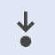
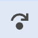
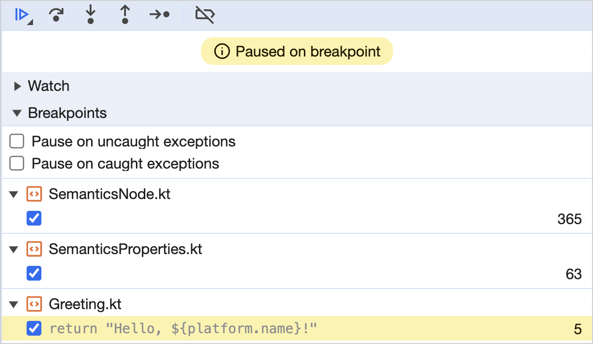

On the
New Project
tab, change the project name and ID to your preference. In this tutorial, we set the name to "WasmDemo" and the ID to "wasm.project.demo".
Select the
Web
option. Make sure that no other options are selected.
Click the
Download
button and unpack the resulting archive.
On the Welcome screen of IntelliJ IDEA, click
Open
or select
File | Open
in the menu bar.
Navigate to the unpacked "WasmDemo" folder and click
Open
.
Run the application
In IntelliJ IDEA, open the
Gradle
tool window by selecting
View
|
Tool Windows
|
Gradle
.
In
composeApp
|
Tasks
|
kotlin browser
, select and run the
wasmJsBrowserDevelopmentRun
task.
Alternatively, you can run the following command in the terminal from the
WasmDemo
root directory:
./gradlew wasmJsBrowserDevelopmentRun
Once the application starts, open the following URL in your browser:
http://localhost:8080/
You see a "Click me!" button. Click it:
Now you see the Compose Multiplatform logo:
Debug in your browser
You can debug this Compose Multiplatform application in your browser out of the box, without additional configurations.
However, for other projects, you may need to configure additional settings in your Gradle build file. For more information about how to configure your browser for debugging, expand the next section.
Configure your browser for debugging
Enable access to project's sources
By default, browsers can't access some of the project's sources necessary for debugging. To provide access, you can configure the Webpack DevServer to serve these sources. In the
ComposeApp
directory, add the following code snippets to your
build.gradle.kts
file.
Custom formatters help display and locate variable values in a more user-friendly and comprehensible manner when debugging Kotlin/Wasm code.
Custom formatters are enabled by default in development builds, so you don't need additional Gradle configurations.
This feature is supported in Firefox and Chromium-based browsers as it uses the
custom formatters API
.
To use this feature, ensure that custom formatters are enabled in your browser's developer tools:
In Chrome DevTools, find the custom formatters checkbox in
Settings | Preferences | Console
:
In Firefox DevTools, find the custom formatters checkbox in
Settings | Advanced settings
:
Custom formatters work for Kotlin/Wasm development builds. If you have specific requirements for production builds, you need to adjust your Gradle configuration accordingly. Add the following compiler option to the
wasmJs {}
block:
After enabling custom formatters, you can continue with the debugging tutorial.
Debug your Kotlin/Wasm application
In the browser window of the application, right-click and select the
Inspect
action to access developer tools. Alternatively, you can use the
F12
shortcut or select
View
|
Developer
|
Developer Tools
.
Switch to the
Sources
tab and select the Kotlin file to debug. In this tutorial, we'll work with the
Greeting.kt
file.
Click on the line numbers to set breakpoints on the code that you want to inspect. Only the lines with darker numbers can have breakpoints.
Click on the
Click me!
button to interact with the application. This action triggers the execution of the code, and the debugger pauses when the execution reaches a breakpoint.
In the debugging pane, use the debugging control buttons to inspect variables and code execution at the breakpoints:

Step into to investigate a function more deeply.

Step over to execute the current line and pause on the next line.
Step out to execute the code until it exits the current function.

Check the
Call stack
and
Scope
panes to trace the sequence of function calls and pinpoint the location of any errors.


 Step out to execute the code until it exits the current function.
Step out to execute the code until it exits the current function.

 Slack:
get a Slack invite
and provide your feedback directly to the developers in our
#webassembly
channel.
Slack:
get a Slack invite
and provide your feedback directly to the developers in our
#webassembly
channel.